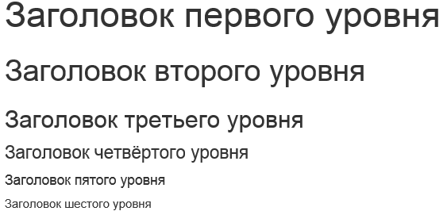
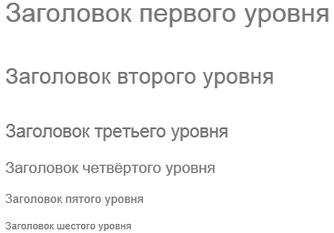
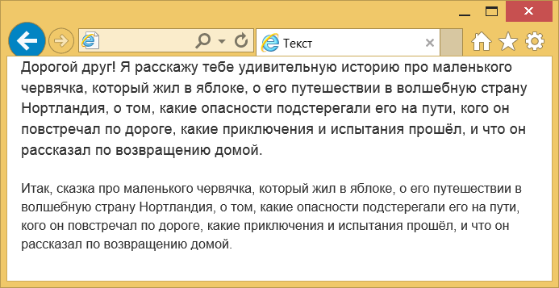
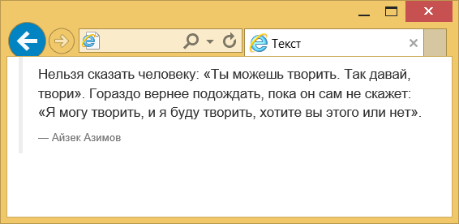
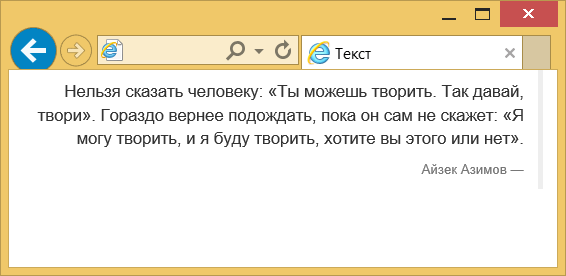
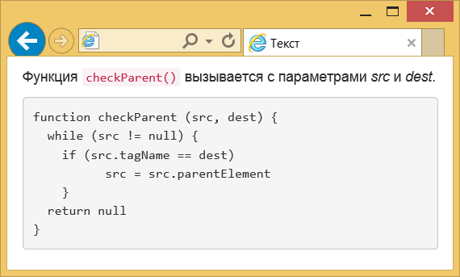

Текст
По умолчанию размер шрифта основного текста установлен как 14px, а межстрочное расстояние (значение свойства line-height) — 1.428. Между абзацами текста (элемент <p>) введено дополнительное расстояние в 10 пикселей.
Заголовки
Для заголовков применяются знакомые из HTML элементы с <h1> по <h6>. Их стиль немного отличается от исходного (рис. 1).

Рис. 1. Вид заголовков текста
Заголовки допустимо немного уменьшить самостоятельно, если внутрь вставить элемент <small>, получится такая комбинация.
<h1><small>Заголовок первого уровня</small></h1>Такого типа заголовки по виду несколько иные и предназначены для других разделов сайта, например, боковой панели (рис. 2).

Рис. 2. Уменьшенные заголовки
Лид
Лидом в журналистике называют первый абзац статьи привлекающий внимание и дающий краткое представление о содержании статьи. Обычно он по своему виду немного отличается от основного текста. Чтобы указать лид достаточно к абзацу или колонке добавить класс lead, как показано в примере 1.
Пример 1. Создание лида
<p class="lead">Дорогой друг! Я расскажу тебе удивительную историю
про маленького червячка, который жил в яблоке,
о его путешествии в волшебную страну Нортландия, о том,
какие опасности подстерегали его на пути, кого он повстречал
по дороге, какие приключения и испытания прошёл,
и что он рассказал по возвращению домой.</p>
<p>Итак, сказка про маленького червячка, который жил в яблоке,
о его путешествии в волшебную страну Нортландия, о том,
какие опасности подстерегали его на пути, кого он повстречал
по дороге, какие приключения и испытания прошёл,
и что он рассказал по возвращению домой.</p>Результат данного примера показан на рис. 3.

Рис. 3. Вид лида в браузере
Аббревиатура
Аббревиатура это сложносокращённое слово (колхоз) или слово, полученное из первых букв слов предложения (КГБ). Для обозначения аббревиатур в тексте применяется элемент <abbr>, а для расшифровки внутрь него добавляется атрибут title (пример 2).
Пример 2. Аббревиатура
<p><abbr title="Cascading Style Sheets, Каскадные таблицы стилей">CSS</abbr> —
набор параметров форматирования, который применяется к элементам
документа, чтобы изменить их внешний вид. </p>Аббревиатура обозначается точечным подчёркиванием, при наведении на слово курсора мыши он меняет свой вид на подсказывающий и появляется всплывающая подсказка, если она есть.
При добавлении класса initialism к элементу <abbr> для него устанавливается свойство font-size со значением 90%, тем самым аббревиатура выводится уменьшенного размера.
<abbr title="Cascading Style Sheets, каскадные таблицы стилей" class="initialism">CSS</abbr>Цитаты
Для оформления больших цитат в HTML применяется элемент <blockquote>, но Bootstrap немного меняет его оформление (рис. 4). Слева от цитаты отображается серая вертикальная линия, а имя автора или источник цитаты выводится уменьшенным размером и серого цвета.

Рис. 4. Вид цитаты в браузере
Если сама цитата делается весьма традиционно, то подпись к ней добавляется с помощью элемента <small> или <footer>, как показано в примере 3.
Пример 3. Добавление цитаты
<blockquote>
<p>Нельзя сказать человеку: «Ты можешь творить.
Так давай, твори». Гораздо вернее подождать, пока он
сам не скажет: «Я могу творить, и я буду творить, хотите
вы этого или нет».</p>
<p><small>Айзек Азимов</small></p>
</blockquote>Цитату можно инвертировать, тогда линия будет справа, а текст выравниваться также по правому краю (рис. 5).

Рис. 5. Цитата, выравненная по правому краю
Просто добавьте класс pull-right к <blockquote>.
<blockquote class="pull-right">...</blockquote>Листинг
Нам часто приходится выкладывать листинги программ и указывать переменные. В HTML для этого есть несколько готовых элементов — <var> обозначает отдельные переменные, <code> — строчный фрагмент кода, а <pre> используется для многостраничного кода (пример 4).
Пример 4. Вывод программы
<p>Функция <code>checkParent()</code> вызывается
с параметрами <var>src</var> и <var>dest</var>.</p>
<pre>function checkParent (src, dest) {
while (src != null) {
if (src.tagName == dest)
src = src.parentElement
}
return null
}</pre>Результат данного примера показан на рис. 6.

Рис. 6. Вид кода программы в браузере
Элемент <pre> занимает высоту равную его содержимому, что для больших листингов может быть неудобно. Чтобы ограничить высоту достаточно добавить класс pre-scrollable, тогда высота будет равна 350 пикселей и появится вертикальная полоса прокрутки.

Все материалы сайта доступны по лицензии Creative Commons «Attribution-NonCommercial» («Атрибуция — Некоммерческое использование») 4.0 Всемирная, если не указано иное.